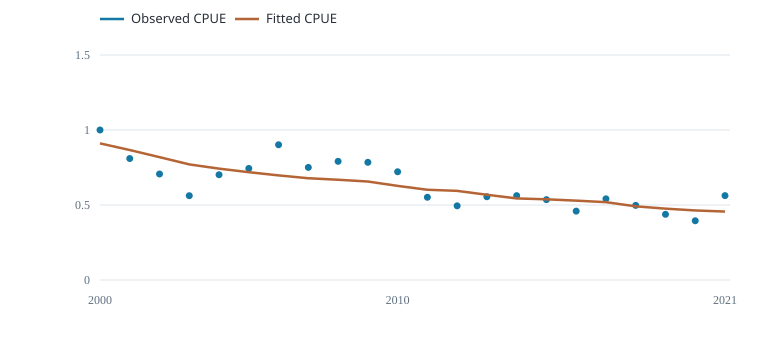
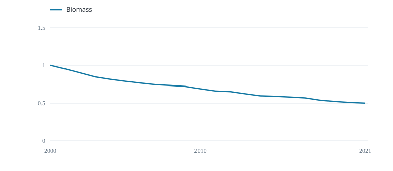

Fit the annual CPUE index and carry catch removals through the stock model.
Observed and fitted CPUE

Relative CPUE
Biomass trajectory

Start-of-year biomass / carrying capacity
Schaefer model · intrinsic growth 0.25 per year · R/RTMB fit · initial biomass equals carrying capacity.
Points are observed indices; the fitted line follows model biomass. Biomass is relative to the fitted capacity.
| Recorded check | Result |
|---|---|
| Biomass recurrence | Pass |
| Positive biomass | Pass |
| Projected gradient | Pass |
These checks do not establish model adequacy.